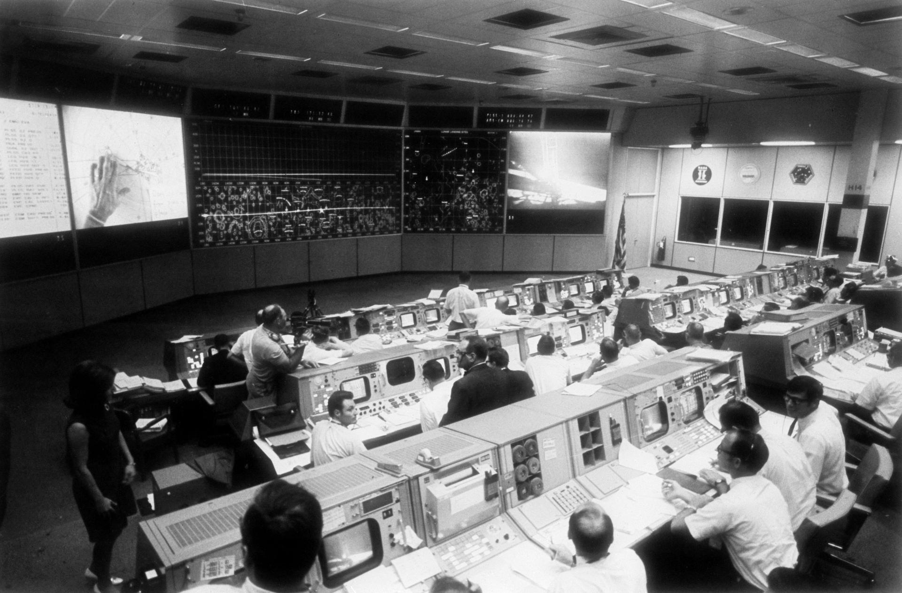

The three concepts: technocultural entanglement, hidden figures, and the future and its history all operate simultaneously in the film.
Explains why segregation could physically interrupt Johnson's critical work. Culture and technology were never separate systems.
Explains how that same system erased Johnson's credit, Jackson's access, and Vaughan's authority. Their labor was acceptable, yet their names were not.
Explains what Vaughan did in response, and what was nearly lost if she hadn't taken action without permission or recognition.

NASA mission control — built on calculations that almost went uncredited.
Harrison tearing down that bathroom sign is the film’s most concentrated synthesis moment. It only happened because Johnson stood up for herself in front of a large team of engineers, forcing them to see what she was silently being put through. She forced them to confront the full weight of what she has silently endured: being underpaid, drinking from a coffee pot nobody else would touch, and running half a mile just to relieve herself (Hidden Figures, 1:02:12).
In that scene alone, all three concepts converge.
Page 6 of 8